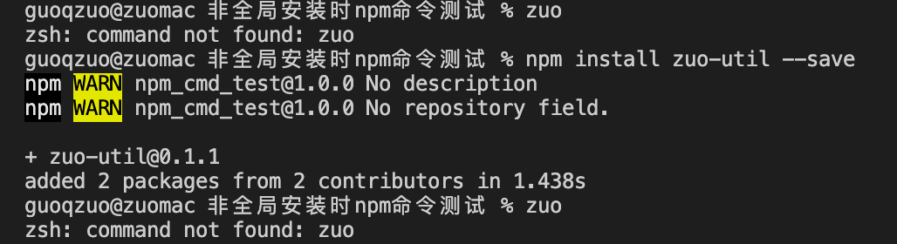
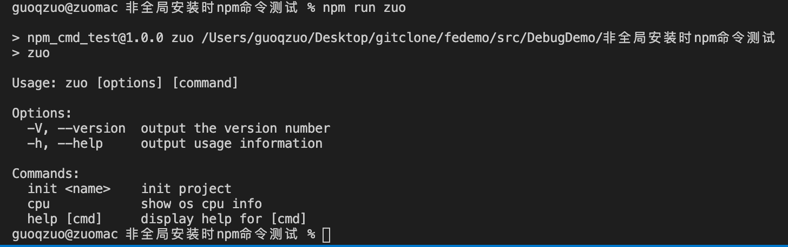
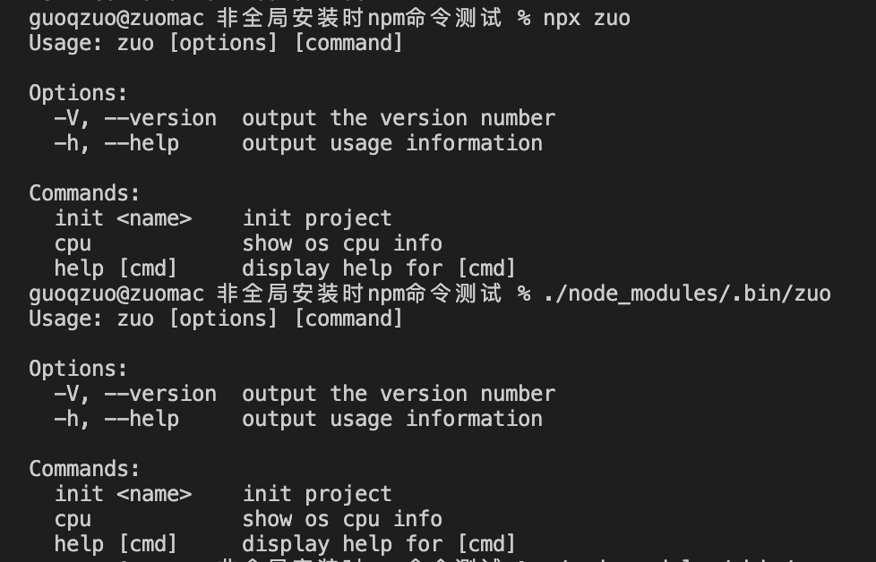

不全局安装npm包，怎么在项目目录下局部执行对应的命令
这篇文章发布于 2020/11/08，归类于 前端工程化
标签：
局部执行npm包命令，不全局安装npm包，怎么在项目中运行命令，局部执行命令
一般在 Vue 开发中，vue 命令可以执行，是因为全局安装了 @vue/cli npm包。假设你无法使用 npm install -g 全局安装，那怎么在当前项目所在的目录运行对应的命令呢？这里我们使用 zuo-util 这么 npm 包来介绍 3 种在项目种运行 npm 包命令的方法：
- npm run xxx
- npx 命令
- ./node_modules/.bin/命令
先准备测试 demo
# 随便创建一个文件夹，并使用terminal进入到该目录，执行 npm init 创建 package.json
npm init
# 输入项目名，英文，这里用 npm_cmd_test，其他全部默认回车
# 运行 zuo 这个命令
zuo
# 找不到这个命令，说明全局没有安装 zsh: command not found: zuo我们再局部安装下
# 项目里局部安装 zuo-util，非全局安装
npm install zuo-util --save
# 再运行 zuo，还是不行
zuo
我们可以使用下面三种方法来运行局部安装的npm包对应的命令
npm run xxx
在 package.json 里的 scripts 里面，我们可以设置运行的命令
// package.json
"scripts": {
"test": "echo \"Error: no test specified\" && exit 1",
"zuo": "zuo"
},按照上面的代码设置后，npm run zuo 即可执行当前目录下的zuo命令

npx 命令
可以使用npx 命令名，执行项目中的，非全局的命令
npx zuo./node_modules/.bin/命令
一般局部安装的命令都会放到 ./node_modules/.bin/ 目录下，可以通过 . 语法直接运行
./node_modules/.bin/zuo